The results that shaped the roadmap
A broken handoff between sellers and buyers
Enterprise sales cycles are long, messy, and involve multiple stakeholders on both sides. Sellers were sending content via email, losing track of what buyers had seen, and struggling to maintain deal momentum. Buyers, meanwhile, were drowning in attachments with no clear way to engage or respond.
The opportunity was clear: create a centralized collaboration platform — a "deal hub" — where sellers and buyers could communicate, share deal-related content, and access engagement insights that accelerate the sales cycle.
Directing the work, not just the pixels
As Product Design Manager, I guided the team through every phase — from defining the research strategy to overseeing the final design handoff to engineering. My responsibilities went beyond design: I aligned stakeholders on product strategy, advocated for user-centered decision-making in roadmap discussions, and created the environment where my team could do their best work.
I led the team structure, set the pace of discovery, made key decisions on information architecture, and ensured design quality at every milestone. The work you see here is a reflection of the team's craft — my job was to make sure they had everything they needed to succeed.
Understanding both sides of the deal
We had two distinct user groups with fundamentally different needs and mental models: sellers who needed to create, manage, and track rooms, and buyers who needed a frictionless experience to engage with content and communicate back.
Wireframes built for two user types
A critical early decision was to design separate interfaces for sellers and buyers — each with their own mental model — rather than a one-size-fits-all experience. This meant establishing clear information architectures for both sides and then finding the connective tissue between them.
Seller wireframes
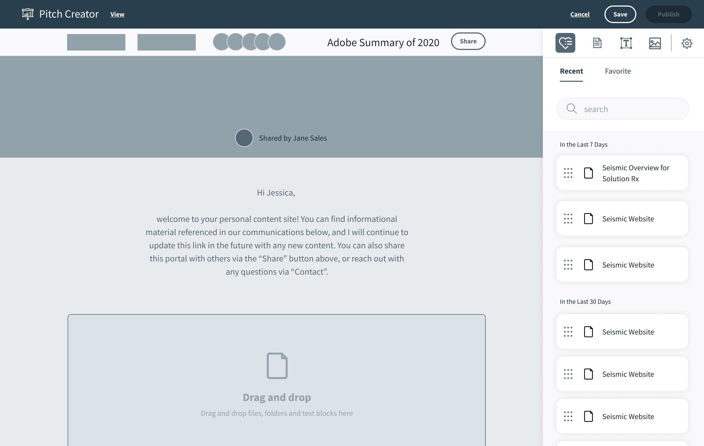
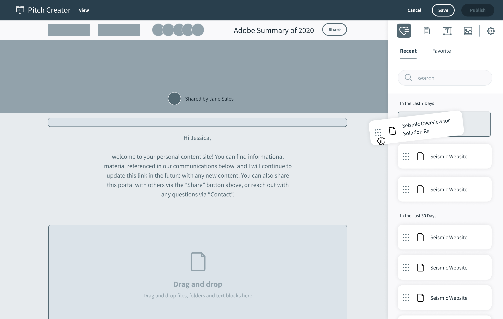
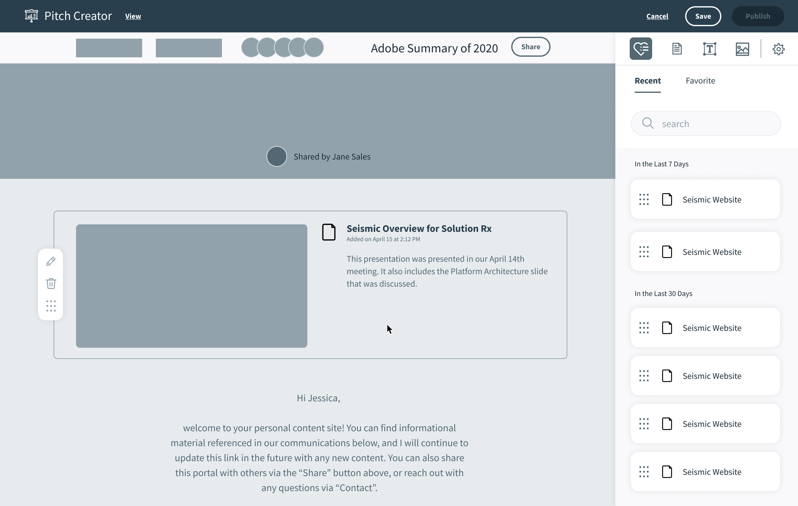
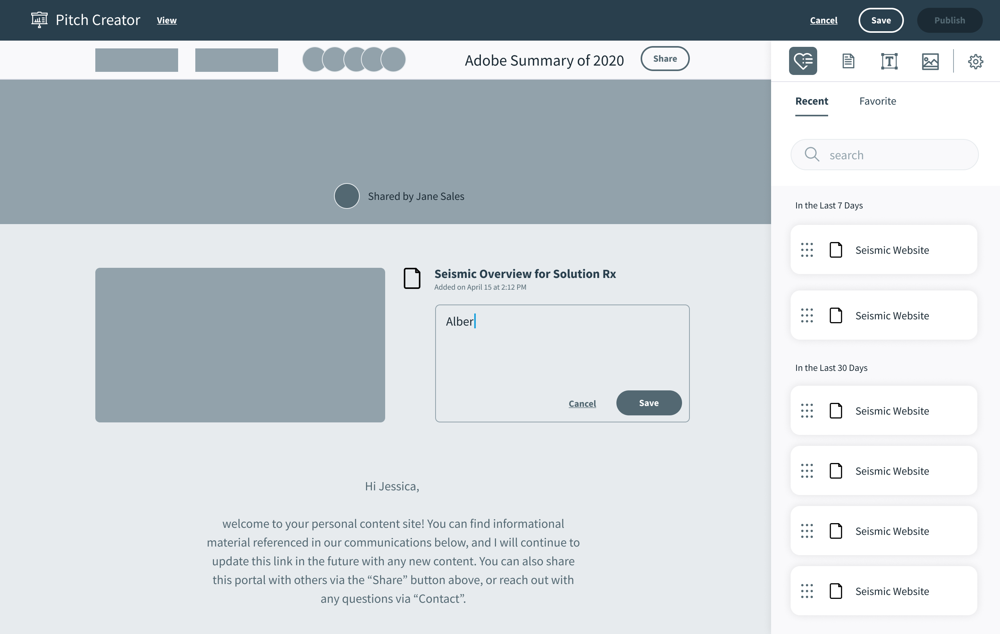
Buyer wireframes
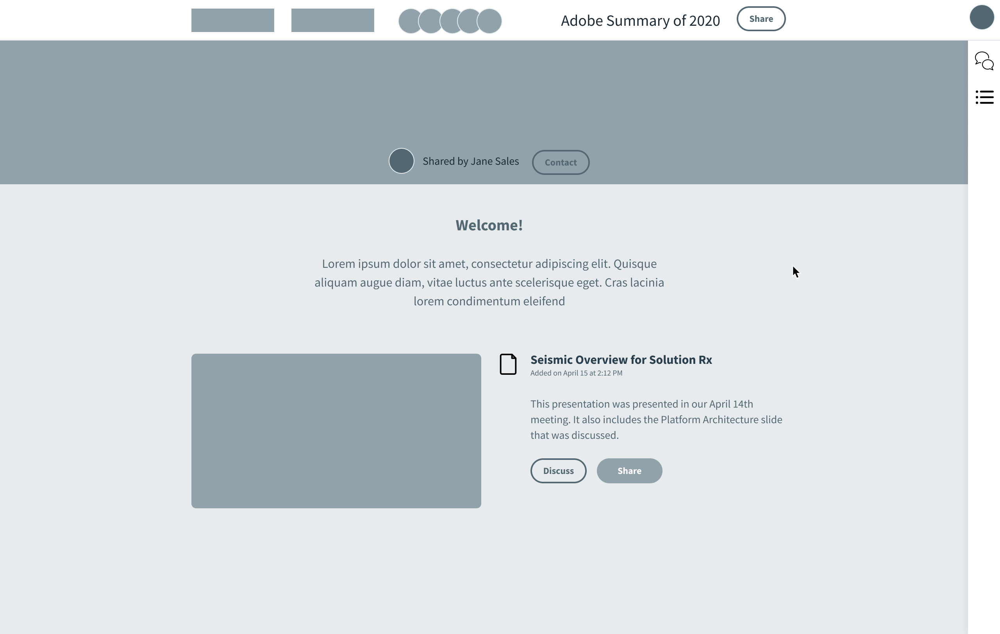
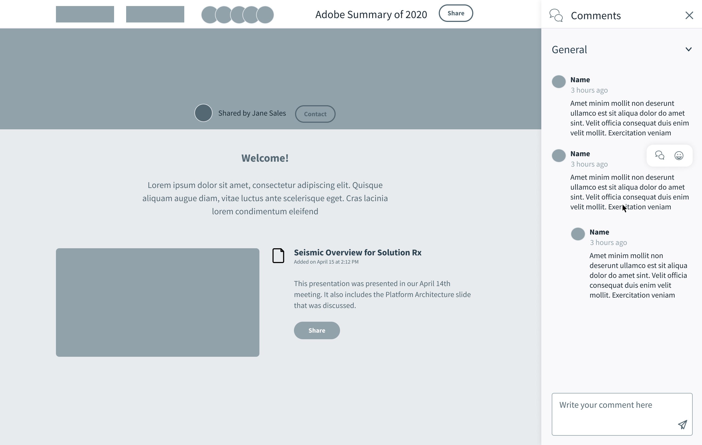
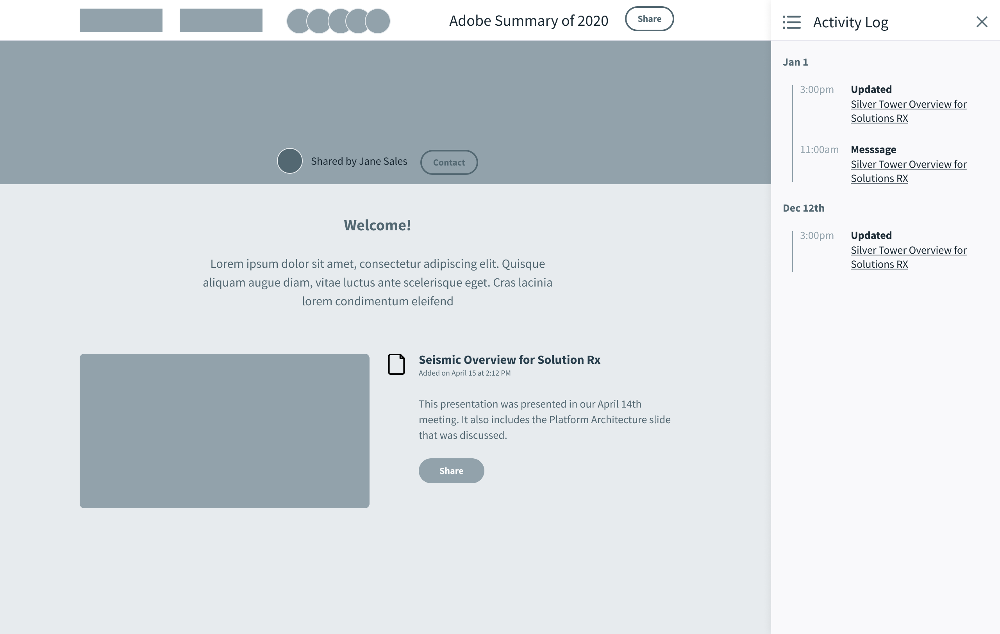
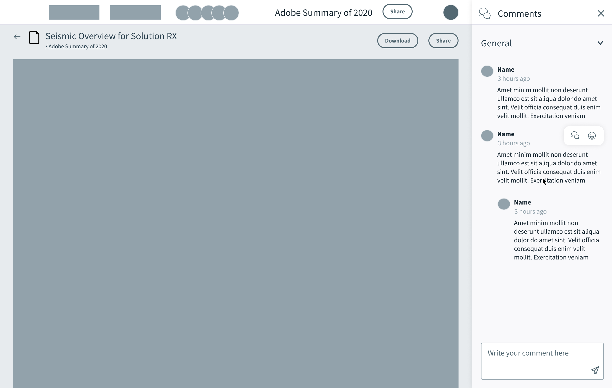
A product that became a platform pillar
Digital Sales Rooms shipped and quickly became one of Seismic's most-used features, demonstrating that sellers were eager for a better way to engage buyers. The product validated our dual-interface approach and opened the door for further investment in the buyer-side experience.
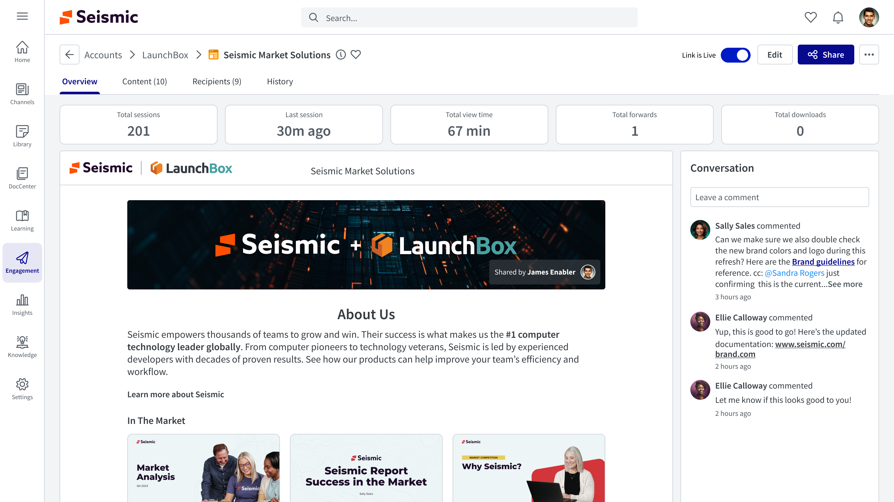
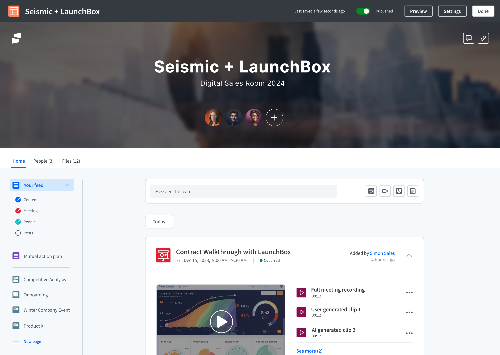
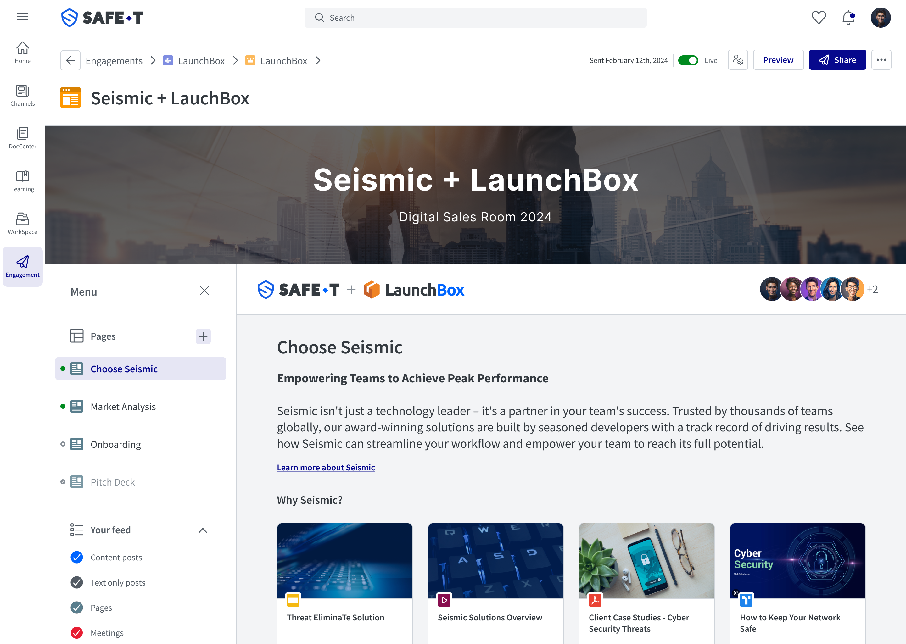
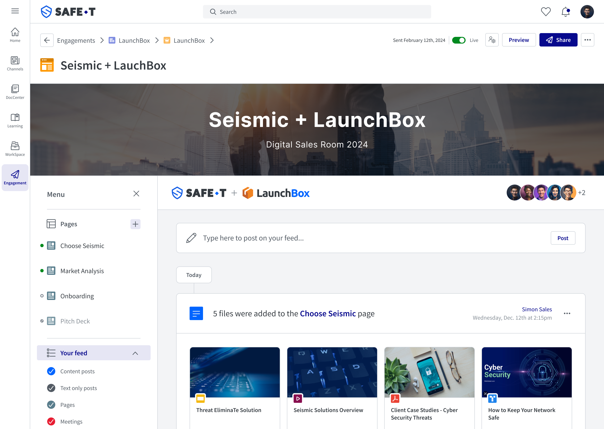
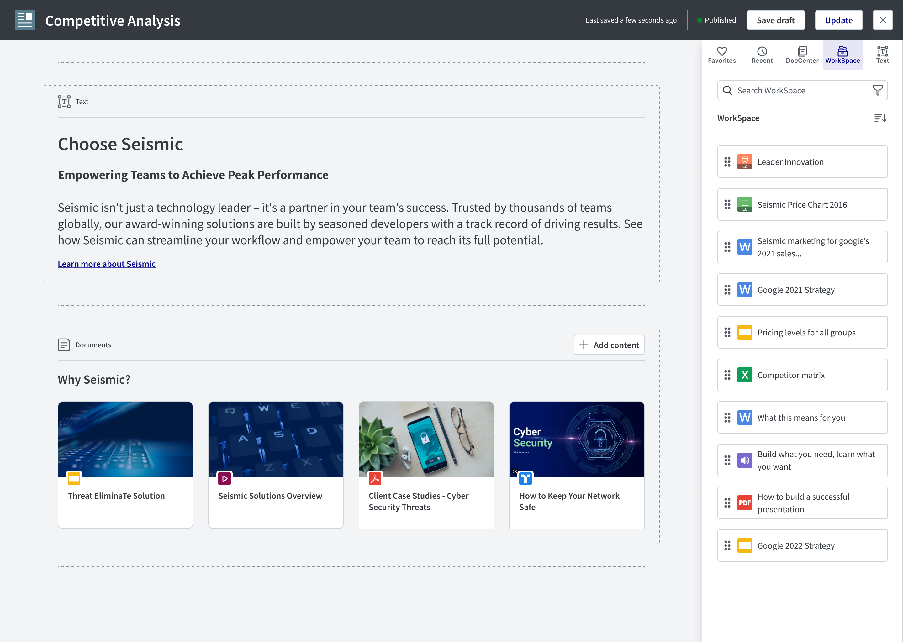
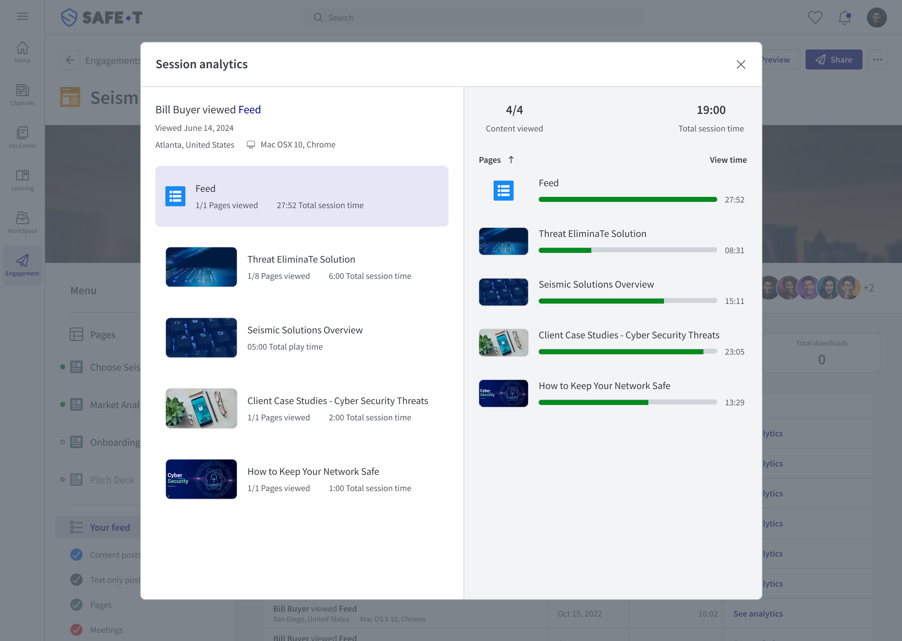